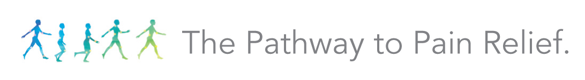
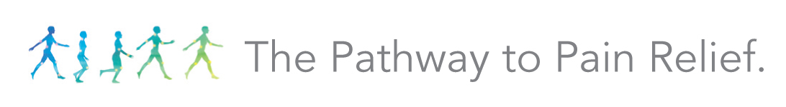

2017 Sponsors
Special thanks to our sponsors for making this event possible for us each year. We are lucky to have their assistance, and can't thank them enough. Please do take a moment to learn more about who they are, and what they can do for your organization.

4C Sports Injury Analytics
4c Sports wants to stop preventable injuries from ending athletic participation at all levels of sport. We provide baseline and post-injury biomechanical and postural sway assessments along with corrective exercise programming in order to help prevent orthopedic injuries before they happen and aid in return-to-play decision making when injuries do occur.
AEGIS SCIENCES CORPORATION
Aegis is a federally certified laboratory that has provided services to Universities since 1990. We are the only INDEPENDENT Sports Laboratory in the U.S. Our Zero Tolerance® program is the MOST ACCURATE drug test available. Aegis is also one of a few select laboratories testing for Anabolic Steroids and Synthetic Cannabinoids. Contact Mike Colello, ATC for more information.

AlterG, Inc
AlterG, Inc. is dedicated to getting people moving. Everyday, AlterG®is researching, innovating and uncovering new technologies and applications of those technologies. From our exclusive, NASA-patented Differential Air Pressure unweighting technology used in our Anti-Gravity Treadmills® to the world’s first intuitive Bionic Leg, we’re delivering industry-leading innovation.
Athletico Physical Therapy
Athletico Physical Therapy provides the highest quality orthopedic rehabilitation services to communities, employers and athletes, with over 340 locations throughout nine states. To demonstrate our commitment to both our patients and referring physicians, we measure functional patient outcomes and patient satisfaction with national data comparison using a third-party outcomes system. Our services include physical and occupational/hand therapy, industrial rehabilitation, women's health therapy, concussion management and athletic training. For more information, please visit www.athletico.com

Biodex Medical Systems, Inc
Biodex Balance Assessment, when used for Concussion Management, adds an objective neurophysical component that gives clinicians the ability to quantify the elements of balance before and after an injury occurs. Reports track recovery and help with RTP decisions. The Biodex Balance System™ SD was designed to meet the needs of everyone looking to improve balance, increase agility, develop muscle tone and treat a wide variety of pathologies. The BioSway™ is a fixed-platform, portable balance device. Biodex Balance Assessment is conducted using either the Balance System SD or BioSway. The Biodex System 4 Multi-Joint Dynamometer identifies, treats and documents the physical impairments that cause functional limitations. Evidence-based clinical protocols combine science with practical application – addressing athletes with ACL injuries, shoulder dysfunction, knee osteoarthritis, lateral ankle sprains and more. A NEW Hamstring Attachment is offered to prevent injury.
 

Biowave
Biowave's BiowavePENS, BiowavePRO and BiowaveHOME neuromodulation pain therapy medical devices deliver a patented therapeutic electrical signal through skin directly to pain nerves blocking the transmission of pain and improving function.

Burst Biologics
Burst Biologics is focused on furthering science as it relates to the development of biologics in order to have more effective treatment options for patients. We provide products for many modalities related to the muscular skeletal system in order to facilitate bone growth. SMART Surgical is also a provider of BioBurst cellular allografts products. Explore the Burst Biologics cutting edge products by clicking below.

CARDEA 20/20 ECG
Cardea 20/20 ECG
"Sudden Cardiac Arrest is the #1 medical cause of death in student athletes. But you can save lives through ECG testing. The Cardea 20/20 ECG is the only system engineered with a proprietary algorithm that detects most heart conditions that can cause an athlete’s sudden cardiac death. Studies continue to recognize that an ECG is the single most effective diagnostic tool to detect heart conditions that put athletes at risk. So why not use the most accurate device on the market?
Free updates: lifetime software and firmware updates at no charge The CardeaScreen ECG System includes a laptop/Windows OS downloaded with CardeaScreen software - ECG device paired & ready - all in one customized hard durable waterproof carrying case.”
By Cardiac Insight Inc
C3Logix
C3Logix=Comprehensive Concussion Care, the first and only mobile based concussion management system that documents and manages this highly complex condition. It was developed, validated, and is still the standard of care at the Cleveland Clinic’s Concussion Center. C3Logix assesses the domains that are impaired by a concussion, standardizes the data collection process, and documents the entire concussion lifecycle. Our data assists clinicians to prescribe a more advanced treatment plan that leads to better patient outcomes (proven at the Cleveland Clinic). While our telemedicine standard of care fundamentally changes the way medical care is delivered in normal and underserved communities.
DJO Global
DJO Global provides solutions for musculoskeletal and vascular health, injury prevention, rehabilitation and pain management as well as joint reconstruction. Our products help prevent injury, rehabilitate after injury or surgery, or manage progression of degenerative disease, enabling patients to keep moving and to return to a healthier lifestyle.
Drug Free Sport
Based in Kansas City, MO, Drug Free Sport is a world-wide leader in the sport drug-testing industry. Drug Free Sport administers comprehensive drug-testing programs, manages national and international collections, develops drug-testing policies and provides educational services to a wide range of clients in sport. We are proud to work with the NFL, MLB, NBA, WNBA, NBA D-League, PGA Tour, LPGA, USGA, the CrossFit Games, NCAA, the Big Ten Conference, NAIA and more than 300 colleges, universities, and amateur athletic organizations around the world. Drug Free Sport AXIS™ is the amalgam of the organization’s educational experience and offerings. Expanding on the former Resource Exchange Center (REC), this subscription service is the pivot point for an athlete’s health and wellness, and the most reliable drug/dietary supplement education resource available.
Forté Elements
Forté Elements fills the gap between traditional pharmaceuticals and dietary supplements with a new category of products called Mediceuticals. Forté’s product formulae combine known nutritional science with pharmaceutical-grade elements specifically designed to address specific medical conditions, such as fracture recovery, post-surgery, postnatal recovery, nerve injury, and brain and joint conditions.
Unlike other nutritional products that are general in nature and often of unreliable quality, Forté designs products that address the specific nutritional needs of a variety of clinical conditions. Forté’s formulations are derived from evidence-based published data validating the impact of focused nutrition on conditions where the body is under extreme stress.

Heal the Athlete
Keep your athletes on top of their game with Cerner HealtheAthlete. The automated health management system helps you minimize player injury and ensure peak performance. With HealtheAthlete, athletes receive more cohesive care on and off the field because their health information is stored online. HealtheAthlete provides a secure electronic health record for you to document injury, rehabilitation, conditioning and health-related events. Each athlete also receives their own Cerner Personal Health Record to create a lifetime record of care. HealtheAthlete meets the workflow needs for professional, collegiate and high school programs. The system is easy to use and built on Cerner’s leading-edge web-based technology. Athletic trainers, physicians and staff can access the system anytime, anywhere, including mobile devices. You can track and trend health data by player, team or across your entire organization. Spotting health trends early allows you to address them immediately and avoid future injuries.
Unlike other nutritional products that are general in nature and often of unreliable quality, Forté designs products that address the specific nutritional needs of a variety of clinical conditions. Forté’s formulations are derived from evidence-based published data validating the impact of focused nutrition on conditions where the body is under extreme stress.

HydroWorx
HydroWorx develops and manufactures aquatic therapy pools near Harrisburg, Pennsylvania. The entrepreneurial business consists of passionate people committed to innovating and servicing products that improve the lives of patients and athletes throughout the world.
imPACT Application Inc.
Trusted by sports teams, schools, corporations, hospitals, and clinics, ImPACT Applications, Inc. is the maker of ImPACT® (Immediate Post-Concussion Assessment and Cognitive Testing), the most widely used computerized neurocognitive test to help identify and manage suspected concussions. Our product is used in more than 7,400 high schools, 1,000 colleges and universities, 900 clinical centers, 475 Credentialed ImPACT Consultants, 200 professional teams, and select military units expressly so medical clinicians, and other qualified healthcare providers, can better manage this injury. Since 2006, over 7 million individuals around the world have taken the ImPACT test.
MioTech Orthopedic Group
Miotech Orthopedic Group is a distributor-partner of DJO Bracing & Supports and a supplier of hundreds of other major brands in Sports Medicine supplies and equipment.
Whether you're looking to brace your lineman, resupply your ATC/PT sundries or outfit a new sports medicine facility with state of the art furniture and equipment, MioTech is prepared to bring our expertise and manufacturer relationships to insure you meet your expectations, goals and deadlines.
Multi Radiance Medical
Multi Radiance manufactures FDA-cleared super pulsed laser devices. Our LaserStim™ allows the practitioner to identify the treatment area and automatically deliver the dose. MR4 Lasers are used by over 50 professional and college teams for managing injuries and maximizing recovery, and are the only therapeutic lasers validated in-vitro, in-vivo, in laboratory trials, and in clinical trials. Portable models for the clinic, or the field; anywhere treatment is needed.

Ferris Mfg. Corp.
Ferris Mfg. Corp. is the maker of the PolyMem & SportsWrap family of dressings. PolyMem (sterile) & SportsWrap (non-sterile) are innovative, adaptable, and universal wound dressings made in the USA. The dressings help to relieve pain, localize inflammation, and reduce swelling. Inflammation is the single greatest cause of pain. Research demonstrates that PolyMem dressings significantly reduce the spread of inflammation into surrounding tissues, helping to relieve pain.

Renegade Sports Care Gear
Renegade Sports Care Gear’s mission is to provide product and information for rapid recovery and injury prevention for simple concerns of an active life and aging, drawn from “best practice” methods of Sports Medicine leaders.
RighEye LLC
RightEye LLC is a health technology company using eye tracking and gaming to revolutionize vision performance and healthcare through an innovative, new kind of vision test. RightEye helps healthcare providers assess concussions, eye sight and performance issues in patients by following a science-based, metric-driven methodology. Using a cloud-based platform, RightEye generates reports within minutes to give doctors an objective, measurable way to view the quality of a patient's vision and track success of remedies such as vision therapy. RightEye customers include nationally recognized optometrists, hospitals, emergency rooms, professional sports teams, and the U.S. military. For more information, visit www.RightEye.com and follow us on Twitter and LinkedIn.
School Health
OUR PROMISE: We deliver an unparalleled customer experience so you can support the health of your athletes to enable them to learn and perform to the best of their abilities.

SyncThink Inc
SyncThink is a leader in neuro-technology with foundational research in eye tracking metrics and devices. SyncThink recently received FDA clearance for its first medical device - EYE-SYNC. The EYE-SYNC device is an integrated head-mounted eye tracking device for rapid, reliable recording, viewing and analyzing of eye movement impairment through the use of virtual reality. Abnormal eye movement is one of the most common deficits after a concussion, an assessment EYE-SYNC yields in under 60 seconds.
EYE-SYNC uses high-performance eye tracking technology to monitor eye movement in a handheld virtual reality environment. If your brain is out of sync after an incident, EYE-SYNC can notify the trainer in less than a medical timeout. In collaboration with the Brain Trauma Foundation, U.S. Army, and Stanford University, SyncThink has developed an eye tracking assessment that measures coordination with predictable movement visual motion, an essential brain function. EYE-SYNC is currently used on the sidelines of many top NCAA programs.